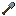
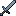

游戏物品
电力物品与手持工具：电池储物袋、回火铁。
 锻造锤锻造锤是早期阶段的手动工具，在出现机器自动化之前，用它来制作金属板。把锤子和锭放到工作台上——就能得到该金属的板。锤子在此过程中不作为材料被消耗：它留在合成网格中，每出一块板消耗 1 点耐久。这是有意设计的"手工费力"路线：从第一块铁起就能手工锻造板，但每块都要付锤子磨损，直到你建成压缩机，开始用电力量产。已实现
锻造锤锻造锤是早期阶段的手动工具，在出现机器自动化之前，用它来制作金属板。把锤子和锭放到工作台上——就能得到该金属的板。锤子在此过程中不作为材料被消耗：它留在合成网格中，每出一块板消耗 1 点耐久。这是有意设计的"手工费力"路线：从第一块铁起就能手工锻造板，但每块都要付锤子磨损，直到你建成压缩机，开始用电力量产。已实现 扳手扳手不会被消耗，能做两件事：配置物品管道的各面朝向，以及拆解本模组的方块。已实现
扳手扳手不会被消耗，能做两件事：配置物品管道的各面朝向，以及拆解本模组的方块。已实现 淬火铁镐淬火铁镐是 Ala Industrial 模组的第一件手持工具。在工作台上用本模组的回火铁按普通镐的形状合成。已实现
淬火铁镐淬火铁镐是 Ala Industrial 模组的第一件手持工具。在工作台上用本模组的回火铁按普通镐的形状合成。已实现 Tempered Iron Tools淬火铁工具是 Ala Industrial 模组的一套共五件手持工具：镐、斧、锄、铲和剑。每一件都按自己的原版对应物合成，但用本模组的回火铁代替铁锭。已实现
Tempered Iron Tools淬火铁工具是 Ala Industrial 模组的一套共五件手持工具：镐、斧、锄、铲和剑。每一件都按自己的原版对应物合成，但用本模组的回火铁代替铁锭。已实现 Tempered Iron Chestplate回火铁护甲是一套共四件的完整套装：头盔、胸甲、护腿和靴子。每件都比对应的铁制件更结实，并用回火铁修复（通过标签 tempered_iron_armor_materials）。防护略高于铁、低于钻石——介于游戏早期与后期之间。已实现
Tempered Iron Chestplate回火铁护甲是一套共四件的完整套装：头盔、胸甲、护腿和靴子。每件都比对应的铁制件更结实，并用回火铁修复（通过标签 tempered_iron_armor_materials）。防护略高于铁、低于钻石——介于游戏早期与后期之间。已实现- Scythe大镰刀是用于快速清理装饰性植被和收割作物的手动工具。右键点击方块会收割前方平面区域内的所有合适植被——树叶、草、花、蕨、蘑菇、藤蔓、垂根、树苗——并掉落普通掉落物，就像你徒手破坏每个方块那样。按住 Shift 把大镰刀变为 AOE 镰刀：同一挥动下只采集已成熟的作物（小麦、胡萝卜、马铃薯、甜菜根、浆果、仙人掌、甘蔗），而装饰物和未成熟幼苗则原封不动。已实现
 电池储物袋电池储物袋是本模组第一个电力物品：一件便携式收纳容器，运作方式类似原版收纳袋，但容量翻倍且需要电量。它只占用物品栏一个槽位，却能装下 128 重量的物品（约两组普通方块）——在长途远行或物品栏吃紧时格外好用。LV已实现
电池储物袋电池储物袋是本模组第一个电力物品：一件便携式收纳容器，运作方式类似原版收纳袋，但容量翻倍且需要电量。它只占用物品栏一个槽位，却能装下 128 重量的物品（约两组普通方块）——在长途远行或物品栏吃紧时格外好用。LV已实现 真空胶囊真空胶囊是可堆叠的液体容器。它解决了原版桶的痛点：桶不可堆叠，一只桶占一个槽，携带大量液体非常不便。已实现
真空胶囊真空胶囊是可堆叠的液体容器。它解决了原版桶的痛点：桶不可堆叠，一只桶占一个槽，携带大量液体非常不便。已实现 电钻电钻是本模组第一件手持电动工具：一把用 EU/FE 代替耐久的钻石镐。只要电量够支撑当前方块，电钻挖掘速度就略快于钻石镐（速度 8.5 对 8.0，钻石采集等级），每个成功破坏的方块消耗 50 EU/FE。满电量为 10 000 EU/FE，约可挖 200 个方块。LV已实现
电钻电钻是本模组第一件手持电动工具：一把用 EU/FE 代替耐久的钻石镐。只要电量够支撑当前方块，电钻挖掘速度就略快于钻石镐（速度 8.5 对 8.0，钻石采集等级），每个成功破坏的方块消耗 50 EU/FE。满电量为 10 000 EU/FE，约可挖 200 个方块。LV已实现 电动铲电动铲是本模组第三件手持电动工具，是电钻（石头）和电动链锯（木材）之后的泥土担当。用 EU/FE 代替耐久：只要电量够支撑当前方块，铲子挖掘 #minecraft:mineable/shovel 的速度就快于钻石铲（速度 9.0 对 8.0），每个成功破坏的方块消耗 20 EU/FE。满电量为 10 000 EU/FE，约可挖 500 个方块。LV已实现
电动铲电动铲是本模组第三件手持电动工具，是电钻（石头）和电动链锯（木材）之后的泥土担当。用 EU/FE 代替耐久：只要电量够支撑当前方块，铲子挖掘 #minecraft:mineable/shovel 的速度就快于钻石铲（速度 9.0 对 8.0），每个成功破坏的方块消耗 20 EU/FE。满电量为 10 000 EU/FE，约可挖 500 个方块。LV已实现 电动链锯电动链锯是本模组第二件手持电动工具，也是电钻在木材上的镜像：一把用 EU/FE 代替耐久的斧子。只要电量够支撑当前方块，链锯砍伐 #minecraft:mineable/axe 的速度就快于钻石斧（速度 9.0 对 8.0），每个成功破坏的方块消耗 30 EU/FE。满电量为 10 000 EU/FE，约可砍伐 333 个方块。LV已实现
电动链锯电动链锯是本模组第二件手持电动工具，也是电钻在木材上的镜像：一把用 EU/FE 代替耐久的斧子。只要电量够支撑当前方块，链锯砍伐 #minecraft:mineable/axe 的速度就快于钻石斧（速度 9.0 对 8.0），每个成功破坏的方块消耗 30 EU/FE。满电量为 10 000 EU/FE，约可砍伐 333 个方块。LV已实现 电动锄电动锄是本系列第四件也是最后一件手持电动工具：在电钻（石头）、链锯（木材）和铲（泥土）之后，它负责农田。契约相同：用 EU/FE 代替耐久，不会损坏，没电时仍以徒手速度工作并完整保留掉落。LV已实现
电动锄电动锄是本系列第四件也是最后一件手持电动工具：在电钻（石头）、链锯（木材）和铲（泥土）之后，它负责农田。契约相同：用 EU/FE 代替耐久，不会损坏，没电时仍以徒手速度工作并完整保留掉落。LV已实现 电磁铁电磁铁是一件可充 EU/FE 的便利物品：放在物品栏的任何槽位（快捷栏 / 主物品栏 / 副手）都会自动把附近掉落的物品吸引到玩家身边——无论是矿洞里的矿石掉落、爆炸后的碎块，还是别的玩家遗弃的物品。它是 tier 1：球形范围 5 格（上/下/四周都算）；每件真正被吸动的物品消耗 2 EU/FE。当附近什么也没有时，空扫描不花一分电。LV已实现
电磁铁电磁铁是一件可充 EU/FE 的便利物品：放在物品栏的任何槽位（快捷栏 / 主物品栏 / 副手）都会自动把附近掉落的物品吸引到玩家身边——无论是矿洞里的矿石掉落、爆炸后的碎块，还是别的玩家遗弃的物品。它是 tier 1：球形范围 5 格（上/下/四周都算）；每件真正被吸动的物品消耗 2 EU/FE。当附近什么也没有时，空扫描不花一分电。LV已实现 能量背包能量背包是一件可穿戴的能量缓存：穿在胸甲槽里，只要你戴着它，它就每秒给物品栏中所有电力物品补一次电。目前唯一的此类物品是电池储物袋：背着背包，储物袋就不会在远征中途没电锁住。LV已实现
能量背包能量背包是一件可穿戴的能量缓存：穿在胸甲槽里，只要你戴着它，它就每秒给物品栏中所有电力物品补一次电。目前唯一的此类物品是电池储物袋：背着背包，储物袋就不会在远征中途没电锁住。LV已实现 喷气背包喷气背包是一件用于飞行的可穿戴 EU/FE 物品：占用胸甲槽（替代护甲），自带 30 000 EU/FE 缓存。在空中按住跳跃键——引擎向上推力并消耗 50 EU/FE/刻：满电量约可维持 ~30…LV已实现
喷气背包喷气背包是一件用于飞行的可穿戴 EU/FE 物品：占用胸甲槽（替代护甲），自带 30 000 EU/FE 缓存。在空中按住跳跃键——引擎向上推力并消耗 50 EU/FE/刻：满电量约可维持 ~30…LV已实现 通量织物胸甲通量织物护甲是本模组第一套完整的 EU/FE 护甲套装，也是纤维 → 通量纤维 → 通量织物链条的终点。它不是肉盾型装备，而是实用型套装：防护与铁同级，玩家为的是一组在有电时启用的加成。LV已实现
通量织物胸甲通量织物护甲是本模组第一套完整的 EU/FE 护甲套装，也是纤维 → 通量纤维 → 通量织物链条的终点。它不是肉盾型装备，而是实用型套装：防护与铁同级，玩家为的是一组在有电时启用的加成。LV已实现- 风速计风速计是一件不需要能量的手持仪器。它不建造、不生产任何东西：它显示你所站位置的风速——以便在风力涡轮机建造之前就选好塔的高度，而不是把塔拆了重搭三次。已实现
 传送遥控器传送遥控器是一件手持信标物品：通过 Shift+右键与传送器站点绑定，随后可触发玩家向站点的跳跃。遥控器本身不存 EU/FE——跳跃所需的能量从已充电的目标站点扣除。LV已实现
传送遥控器传送遥控器是一件手持信标物品：通过 Shift+右键与传送器站点绑定，随后可触发玩家向站点的跳跃。遥控器本身不存 EU/FE——跳跃所需的能量从已充电的目标站点扣除。LV已实现 灵魂容器灵魂容器是一只镶在银框里的玻璃瓶，瓶底铺着灵魂沙。只要容器待在你的物品栏里，每一只 由你亲手击杀的敌对生物——用你的拳头、你的剑、你的箭——都会把灵魂交给它。宠物、陷阱 和他人造成的击杀不计入。已实现
灵魂容器灵魂容器是一只镶在银框里的玻璃瓶，瓶底铺着灵魂沙。只要容器待在你的物品栏里，每一只 由你亲手击杀的敌对生物——用你的拳头、你的剑、你的箭——都会把灵魂交给它。宠物、陷阱 和他人造成的击杀不计入。已实现 屏蔽胸甲防护服由四件组成——头罩、上衣、裤子和靴子，是本模组中唯一可穿戴的防辐射装备。它不是盔甲： 防御力只有皮革水平，你买到的不是数值，而是走近铀、走进运转中的反应堆，然后活着走出来的能力。已实现
屏蔽胸甲防护服由四件组成——头罩、上衣、裤子和靴子，是本模组中唯一可穿戴的防辐射装备。它不是盔甲： 防御力只有皮革水平，你买到的不是数值，而是走近铀、走进运转中的反应堆，然后活着走出来的能力。已实现 电动军刀电动军刀是电力装备系列第五件物品，也是该系列的第一件武器：在电钻（石头）、链锯（木材）、铲（泥土）和锄（农田）之后，轮到战斗。系列契约不变：用 EU/FE 代替耐久，不会损坏，没电时不关闭而是降级。LV已实现
电动军刀电动军刀是电力装备系列第五件物品，也是该系列的第一件武器：在电钻（石头）、链锯（木材）、铲（泥土）和锄（农田）之后，轮到战斗。系列契约不变：用 EU/FE 代替耐久，不会损坏，没电时不关闭而是降级。LV已实现
更多可用物品
 淬火铁斧
淬火铁斧
淬火铁锹 淬火铁锄
淬火铁锄
淬火铁剑Tempered Iron Helmet
 Tempered Iron Chestplate
Tempered Iron Chestplate Tempered Iron Leggings
Tempered Iron Leggings Tempered Iron Boots
Tempered Iron Boots